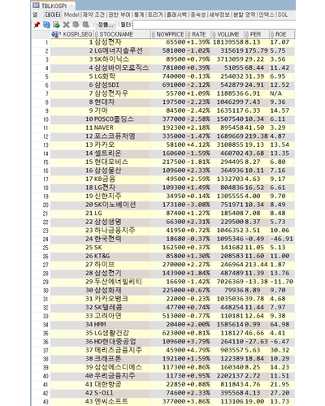
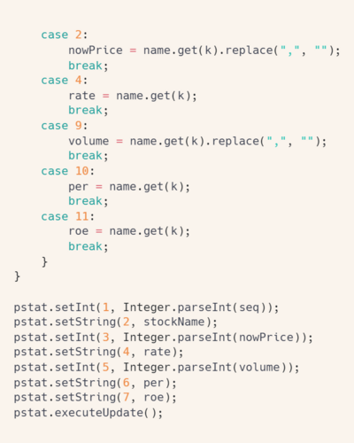

모의 주식 투자 프로그램
📁 ERD

🔨 기능
1️⃣ 주식 시세 크롤링
네이버 증권에서 주식의 시세를 얻어와서 데이터베이스에 저장하는 기능입니다.




jSoup 라이브러리를 이용하여 시세 정보를 크롤링하여 list에 추가합니다. 그 후 반복문의 index를 적절히 활용하여 list의 요소를 종목별로 나누어 DB의 코스피, 코스닥 테이블 각 행에 저장합니다.


코스피와 코스닥 테이블의 데이터를 각각
상승률, 하락률 순위대로 정렬하여 view를 생성합니다. 상승률/하락률 Top 10의 시세정보를 조회하는 기능을 view를 이용하여 간단하게 구현할 수 있습니다.
2️⃣ 종목 검색
종목명을 입력하여 원하는 종목의 시세를 검색하는 기능입니다.
회원의 경우 검색한 종목을 관심 종목으로 등록하거나 매수할 수 있습니다.
검색한 종목을 관심 종목으로 등록하거나
매수할 수 있는 메소드입니다. 비회원일 경우 NullPointerException을 발생시킵니다. 해당 예외는 userAdditionalInput()에서 처리하여 로그인하지 않은 경우 해당 기능을 이용할 수 없음을 안내합니다.